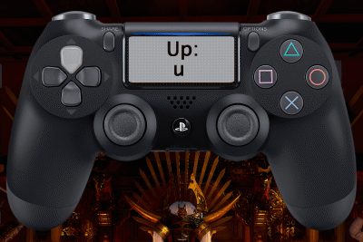

Basics: Movement
Tekken 7 is categorized as a 3D fighter. This means that players have access to the X and Y coordinate plane within the stage much like 2D fighters such as street fighter; where characters can jump up and move backward and forward. However, Tekken introduces the Z-axis that allow players to move their characters into the background and foreground of the stage. Moving forward involves pressing in the direction that your character is facing and backwards respectivley. To move into the background or foreground, also known as sidestepping, tap up or down. To shimmy into the Z-plane, aka sidewalking, tap up or down twice but hold the last input to stay in a sidewalking animation. Although not common nor necessary, you can jump by holding up and combining it with a forward or back input will make you jump in that direction. Tapping back twice will cause your opponent to backdash, allowing them to create distance faster than holding the back direction. Similarly, tapping forward twice will propel your character towards the opponent. When done from a great distance, it will lead to a takedown tackle; and when done fullscreen, it will induce an invincible tackle. This gif is relative to the left side (player 1).
Basics: Offense
Offense in Tekken is a bit different than other games. In Tekken, each action button controls a certain limb. However, we must first go over how the limbs are represented in a universal method so as to apply to any platform used to play (Xbox, PS4, PC).
Review the table below:
| Limb | Numeric notation |
|---|---|
| Left punch | 1 |
| Right punch | 2 |
| Left kick | 3 |
| Right kick | 4 |

Attacks come in 3 properties: High, Mid, and Low. Highs and Mids can be blocked by holding back as mentioned in the defense section; in some cases you can neutral guard, where you don't do anything. Lows can be blocked or low parried as also mentioned in the defense section. These three properties can also have homing features. Homing attacks are moves that keep your opponent from sidestepping or sidewalking and are indicated by the sparkles that trail your characters limb or by the blue icon next to the move in the movelist.
Basics: Defending
Defending in any fighting game is important and the same holds true for Tekken. Unlike most fighters that set aside a dedicated button to perform a block, Tekken's blocking mechanic utilizes the pre-existing backward movement as the standing block. Simply holding the back button on your controller will cause your character to block incoming attacks. Although this is true for the majority of the time, holding back will not block incoming low attacks; to defend against low attacks simply hold the down button at the same time as holding back (d/b). There's also another way to deal with incoming low attacks through the use of low parries. This act involves pressing down and forward (d/f) at the same time and at the precise moment before the low makes contact; this causes your character to shove the the opponent's limb to the side causing them to fall.
Basics: Combo System
The combo system in Tekken is referred to as a juggle. The combo system has always been a part of the game but not until the introduction of the bound system introduced in Tekken 6. In its basic form, a combo consists of a launcher, filler, bound/tailspin, and an ender.
Launchers are normally seen as anything that launches the opponent into the air. However, some moves that land counter hit may give you the opportunity to start a combo due to a counter hit stun. Fillers are moves that you do after a launcher but before the ender. Fillers are where most of the damage come from; fillers are not infinite meaning that the more hits you do the further away you knock your opponent from you. Therefore, it is important to be conscious of how many hits you perform and do higher damage moves to optimize. In Tekken 7, a tailspin is a move that causes your opponent to spin after you done all the filler moves allowed and acts as a transition into the ender portion of the combo, and can be identified by a green icon within the movelist. Enders, as the name states, finishes your combos. You can perform moves that do more damage at the end such as high damage moves, rage drives or rage arts. You can use moves that will knock them into to the wall to achieve more damage from a wall ender, or you can sacrifice the damage and spike them to the ground in front of you to keep the pressure. Refer to the sample combos at the end of your characters movelist in practice mode.
In addition to the combo system, wall combos happen when an opponent is hit into the wall. If an opponent is hit into the wall while airbourne, additional opportunity to deal wall damage is present. Certain moves have special properties called wall splat, wall stun and wall bound. These moves are important because cornering the opponent is a favorable position for dealing massive damage. Another apsect to the combo system is the wall bounce. A wall bounce aims to add the ability to deal more damage by sending your opponent flying to the wall and cause them to bounce off of it and back towards you allowing them to splat against the wall twice.
Basics: Power Crush
Also new to the franchise, Power Crushes are powerful tools that can be used to relieve the pressure of an opponent. Power crushes are attacks that absorb damage. Power Crushes can be beaten by grabs, lows, rage drives, and rage arts. These moves can be identified from a red icon beside the move in the movelist.
Basics: Grappling
Grabs have always been a staple in Tekken and it still holds true within this installment. Grabs are not only useful for damage but can be used to switch sides, position the opponent up against the wall, okizeme opportunities, or any other advantageous situation. There are two types of grabs: a generic and a command grab. Generic grabs are done by pressing 2+4 / f+2+4 or 1+3/f+1+3. Command grabs are categorized when more than one direction is paired with the generic grab inputs. Command grabs can also have button combinations such as 1+2 or 3+4 (specific to certain characters). Certain characters also have what are called chain grabs, which are a combination of many command grabs that follow a sequential order and have to be precisely timed one after the other (best example is the character: King).
Throws in Tekken are broken on reaction; the window or time allotted in order to do so is very small and should be broken immediately once it makes contact. Throw breaks are reliant on the notations of 1, 2, or 1+2. Tekken 7 throw breaks are more lenient than previous installment due to the simple fact that generic grabs can now be broken with either an input of 1 or 2. However, command grabs must be broken like the old way. When the opponent's left hand reaches out to grab you (1+3 grab), you must break with the button notation of 1. If the right hand reaches out (2+4 grab), then the notation of 2 must be used to escape. Lastly, if both hands reaches out then 1+2 must be pressed to break the throw. So it is important to rely on the traditional way of breaking throw by paying attention to which hand reaches out first and practice on reacting to them.
Basics: Rage Drives and Arts
The term "rage" was originally introduced in the installment of Tekken 6, where the character would produce a red aura around their body indicating that their health was critically low and were given the ability to deal 10% more damage to the opponent as a result. This introduction added a new strategic layer to the game due to the opportunity the opponent had to make a comeback within the match. Now with further development of the rage system, Tekken 7 has introduced rage drives and rage arts. Both mechanics are only available when your character is in rage, hence the name, and will disappear once either one is used. Rage drives are devastating, enhanced moves of a character that can be used to extended a combo, inflict more damage, or be used to induce an opportunity for a mixup; rage drives are normally safe if blocked by the opponent. Rage Arts are cinematic cutscenes that deal damage but scales depending on how much health you had during the time of activation. All rage arts are unsafe if blocked or ducked, with the exception of the character: Hwoarang, and can generally be punished heavily or even launch punished. However, Rage arts can absorb damage while in its startup animation, which can be used to catch an opponent off guard if you find them pressuring you.
Basics: Getting up
Learning how to get up is often overlooked but it is a complex system and a crucial technique to be accustomed with in Tekken. No matter how good or bad you are at the game, no one is immune to getting knocked down. Once you've been knocked down, you have many options to get up depending on your position. These positions are: face up feet towards, face up feet away, face down feet towards, or face down feet away. There's no clear answer to which option is the safest way to get up as each has a risk/reward. Understand the different wake up options and further explore which option works best in specific situations.
Backroll/backtech: A common way to get up is to backroll/backtech, which is done by holding backwards away from the opponent while grounded or airborne. When performing this in a face up feet towards position, you are invincible during the animation. However, if you're face up feet away then the animation leaves you vulnerable.
Forward roll: Not a common option but will cause your character to roll forward towards the opponent but thats often not a good idea unless you plan to spring towards with an attack. (ex: cross chop - roll forward while pressing 1+2). When holding forward from an airborne state, it will cause the character to flip back up (kip up). This is dangerous because it allows an opportunity for the opponent to "scoop" you back up during the animation or resetting the situation, which also resets the combo system, allowing for more damage.
Wake-up crouch: You may be inclined to wake up in a crouching d/b position to block an incoming low but again your character is crouching, opening them up to devastating mid attacks.
Standing up: Another option is to get straight up, reducing the animation period. This allows your character to their entire movelist.
Techroll/Ukemi: Another good option is side rolling to the left or right when grounded. This can be achieved by pressing either 1 or 2; or 3 or 4 to determine which way you will roll (dependent on which side of the screen you're on). You have access to one roll once grounded, but if the opponent hits you while grounded then the situation resets and you have access to one roll again. You also have access to quick invincible tech rolls but only when your character falls from an airborne state and not when your feet are planted on the ground, such as from a counter hit stun. However, the animation of the quickroll makes your character recover in crouch, allowing your character to only have access to while standing (ws) moves and nothing else. In certain situations, a quick sideroll, or Ukemi, is needed to reduce the potential damage of your character; such as the situations certain characters like King's giant swing throw, where damage can be reduced if you time the button(s) as soon as you hit the ground.
Wake up attacks: All are punishable on block but usually they are plus on hit and some knockdown or are launchers. Consider the risk/rewards when deciding to use a get up attack off of the ground. These generic attacks can come in the forms of wake-up lows, mids, spring kicks(launching yourself towards opponent using 3+4), and cross chops as mention above. Explore your character's options to see if you have character specific wakeup attacks outside of the generic ones. (ex: Marduk can tackle when grounded face down,feet away.)
Staying grounded: In certain situations, it may be wise to stay down such as a situation where your opponent is expecting you to get up at a specific time and wants to attack. Staying grounded can be a good idea to see what your opponent is inclined to do. However, against certain characters, staying on the ground for too long can be a bad idea becuase some characters have access to options that will grab you from the ground to do additional damage such as King's ground throws. Armor King, Geese, Gigas, King, and Marduk all have access to options to take additional advantage from a grounded position.
Basics: Punishment
Much like the word states, Punishment in Tekken is when you can damage your opponent during the recovery period after they've opened themselves up by attacking. Punishment in Tekken is important to optimizing damage given opportunites that will present itself throughout every match. Punishment comes in two forms: block punishing and whiff punishing. Block punishing is achieved when you block a move from an opponent and retaliate before they recover back to their normal position/stance. Whiff punishing occurs when your opponent strikes the air and you retaliate before they can compose themselves. Much like real fighting, imagine if a fighter attempts to throw a kick to the head and their opponent blocks it, the time between their leg returning to the ground can be used to retaliate, this is block punishing. Now imagine if an MMA fighter performs a spinning kick but completely misses, their opponent can seize the opportunity and time a strike while their back is towards them as they rotate back to a normal position, this is whiff punishing.